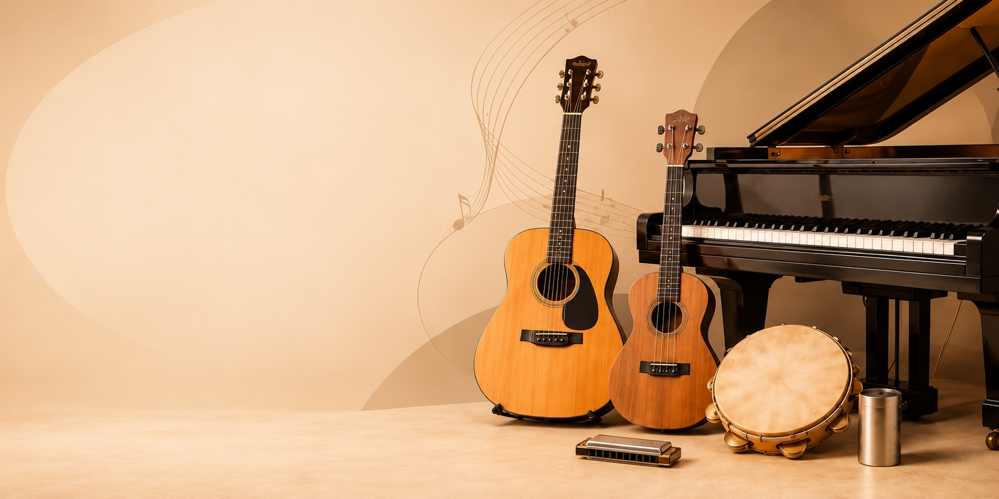

INSTRUMENTUM
Uma paixão, diferentes instrumentos, infinitas possibilidades.
A música sempre fez parte da minha vida. Tudo começou aos 16 anos, com o violão, e desde então essa paixão se transformou em uma jornada de descobertas, aprendizados e novas sonoridades.

Explore os instrumentos
Cada instrumento possui uma história, características e uma sonoridade única.
Sobre mim
Muito além dos instrumentos, uma paixão pela música.
Meu nome é Rodrigo, tenho 26 anos e sou apaixonado por música. Ao longo da minha trajetória, descobri que cada instrumento possui uma identidade própria, uma maneira diferente de produzir sons e inúmeras possibilidades de expressão. Essa curiosidade me levou a conhecer e aprender a tocar diferentes instrumentos, cada um contribuindo de uma forma especial para minha relação com a música.
A ideia deste projeto surgiu da vontade de compartilhar um pouco desse universo. Quero apresentar a pessoas curiosas ou apaixonadas por música, assim como eu, um pouco sobre cada instrumento, suas características, seu funcionamento e aquilo que os torna únicos. Mais do que compartilhar informações, espero que este espaço desperte novas curiosidades e talvez inspire outras pessoas a conhecerem ou até mesmo aprenderem um instrumento.
Afinal, a música está presente em muitos momentos da nossa vida. Ela acompanha nossa rotina, marca lembranças, aproxima pessoas, transmite sentimentos e faz parte da maneira como enxergamos o mundo. Seja em uma melodia tranquila, em uma roda de amigos ou em uma grande apresentação, ela tem um papel especial no nosso dia a dia.
Porque a música vai muito além de ouvir: é descobrir, sentir, aprender e compartilhar.